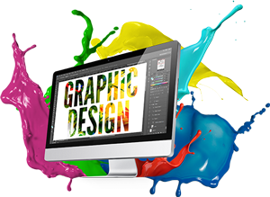
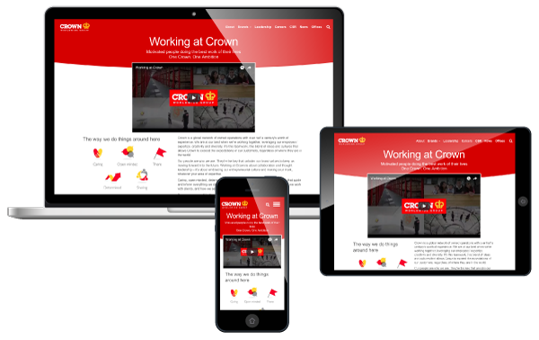

Hello!! I'm Schadrac Jean Charles
Graphist / Web Designer / BeatMaker / Music Producer
Welcome to my portfolio. I am graphic and web designer, I am a beatmaker passionate in music production. I like everything that is related to the art. Somehow I'm a design enthusiast, I'm sure you love what you see. I am here to help you make your work attractive.
Projects
 About Me
I am a designer, I am passionate about colors, everything that can seem very attractive. I started drawing since my childhood, at home, at school, I participated in drawing competitions, since then I understood my passion for design.
Skills
- Website Design and Implementation
- Graphic Design
- Music Production
Programs
- Presonus Studio One
- Visual Studio Code
- Eclipse
- FL Studio
- Brackets
- Notepad++
Languages
- Java
- HTML/CSS
- Android
- Java Script